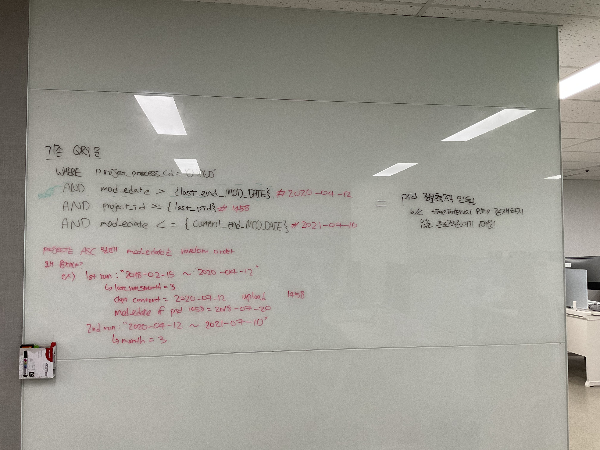

Code Refactoring
May 2021 - Dec 2021 | Seolleung, Seoul ROK
This project was done during my first through second coop terms. My task was to refactor a backup program written by previous coop student by implementing Object Oriented Programing (OOP) in Python. The entire 1600+ lines of code was written in one file. As my supervisor,CTO, said - the crucial part of code refactoring is that the developer must understand the logic behind the codes 100% before making changes. However, the code took me months to understand which felt like I was not making progress even though I was working with other tasks at the same time. There were several times I wanted to give up but after countless researching and studying during my personal time I was able to finished the task successfully. After this task, I improved strong problem-solving skills, ability multi-task, management/organization skills, and independency.